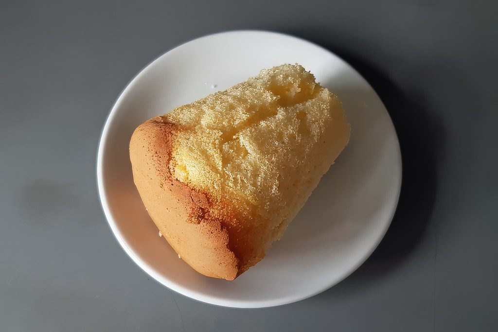
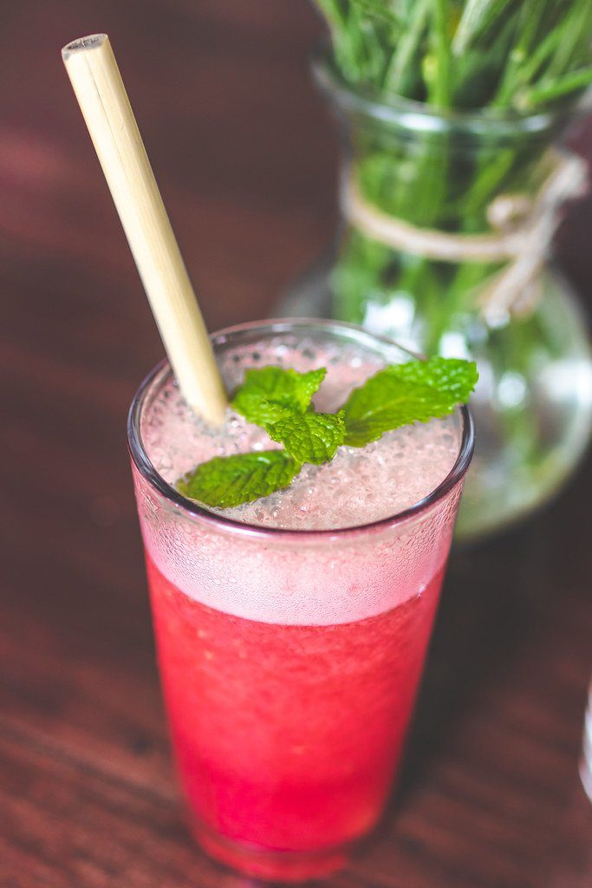
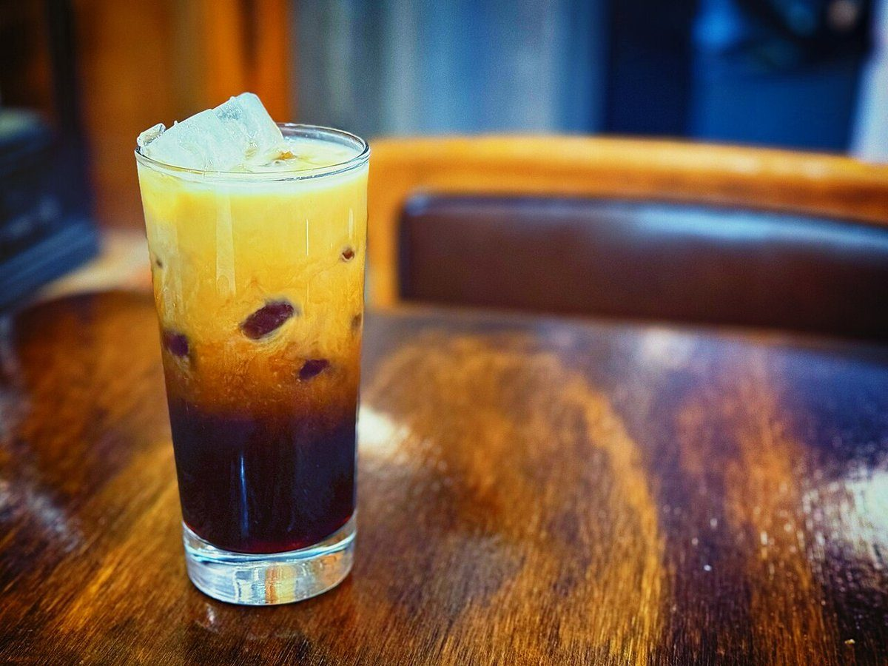
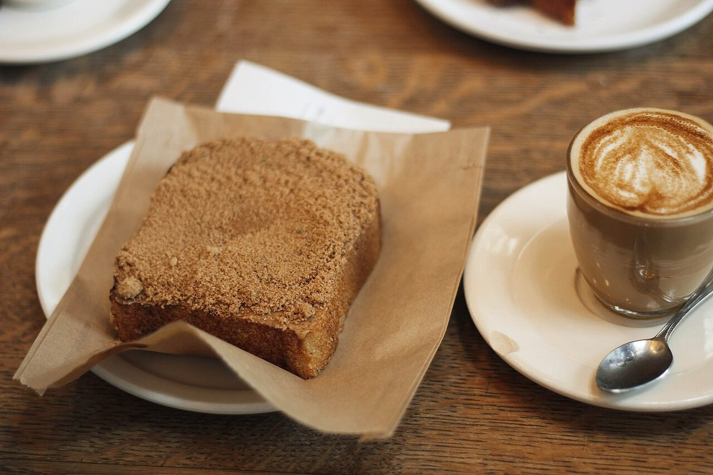
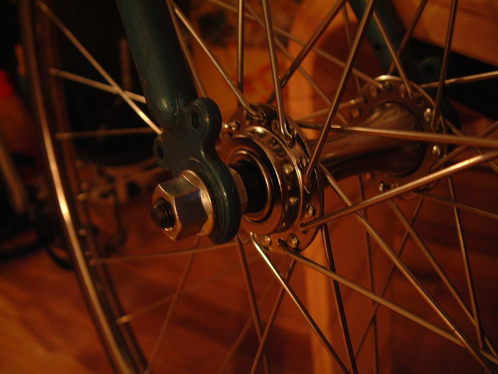
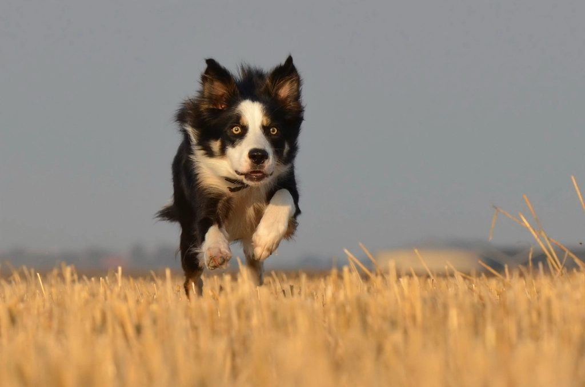

MENUメニュー
ブログやSNSで紹介されているのは、数量限定のランチボックス、季節のシフォンケーキ、自家製の梅ソーダ、アイスコーヒーなど。内容は日によって変わります。営業時間・定休日・価格・詳細は準備中です。

季節のシフォンケーキ
ふわふわのシフォンケーキが紹介されています。(写真はイメージです)
写真: Pillow Soft Chiffon Cake / chooyutshing / パブリックドメイン(PDM 1.0)

自家製 梅ソーダ
自家製の梅ソーダが紹介されています。(写真は別のドリンクのイメージです)
写真: Raspberry lemonade on a wooden table / Artem Beliaikin / CC0 1.0

アイスコーヒー
川風の中でいただく一杯に。(写真はイメージです)
写真: Iced Coffee in Glass - Sunshine Coffee - Laramie Cafe / Tony Webster / CC BY 2.0
ランチボックスは数量限定とのことです。ご利用前にInstagramでご確認ください。

写真: The cup of coffee on a wooden table / Artem Beliaikin / CC BY 2.0

写真: Weatherworn top of wooden table / W.carter / CC0 1.0

写真: Coffee and coffee cake (Unsplash) / Stephanie McCabe / CC0 1.0

写真: Coffee cup and coffee bean / mcfoodie / CC0 1.0

写真: Roasted coffee beans / MarkSweep / パブリックドメイン

写真: Spokes 2 / sethw / CC BY-SA 2.0

写真: Border collie dog running dry / 作者不明(rawpixel掲載) / CC0 1.0

写真: Echigo plain paddy fields / yamakidoms / CC BY-SA 2.0